OFFLINE SHARE / CODEX UPDATE
手机远控、Chrome、Appshots、分支对话、Goal mode
NOT JUST BUTTONS
这次更新不是多几个入口，而是 Codex 从电脑前的代码助手，变成可以跨设备、跨网页、跨屏幕持续协作的工作台。
GET READY
很多人不是不会用，而是第一步不知道从哪里下载。线下分享先把入口讲清楚。
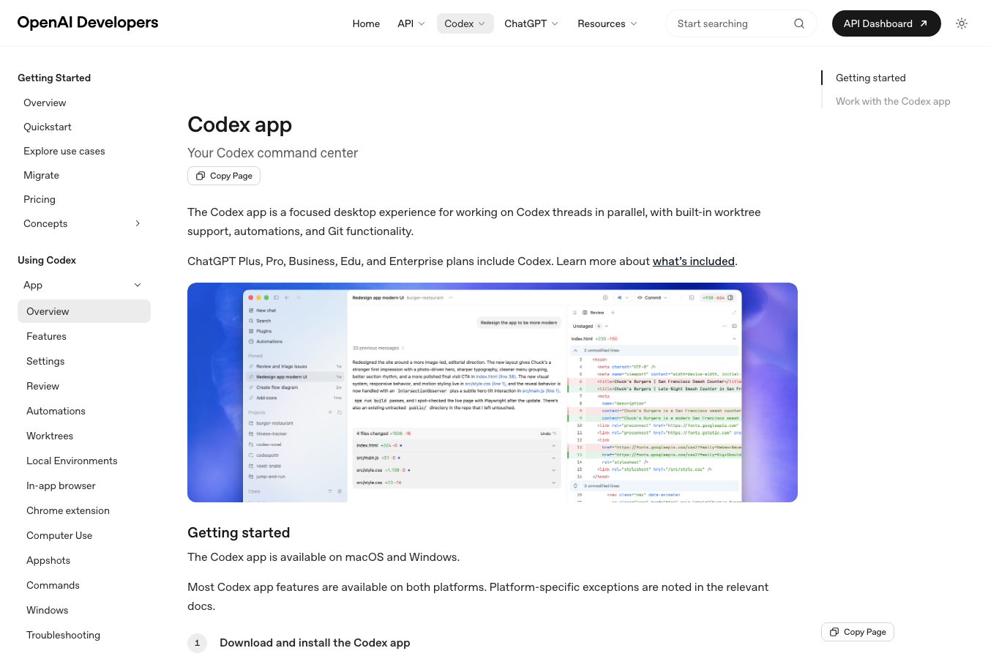
MAY RELEASE MAP
5/07 Chrome 插件，5/14 手机远程控制，5/21 Appshots 与 Goal mode。先给观众一张时间线，再展开最有用的功能。
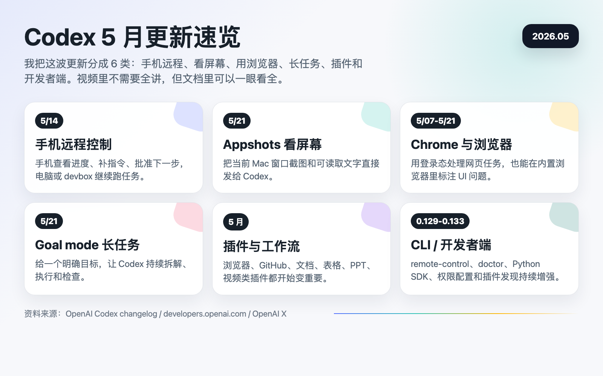
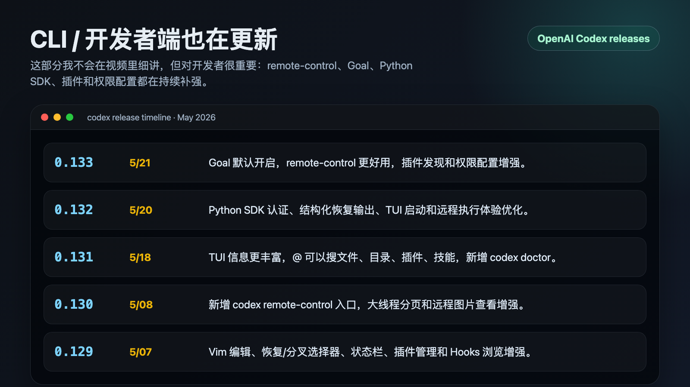
DEVELOPER SIDE
这一页快速带过：重点不是让所有人立刻用 CLI，而是说明 Codex 的桌面、手机和开发者端正在同步进化。
THE 5 WORTH EXPANDING
01 / MOBILE REMOTE CONTROL
重点不是“手机上写代码”，而是手机可以远程控制那台正在运行 Codex 的电脑。
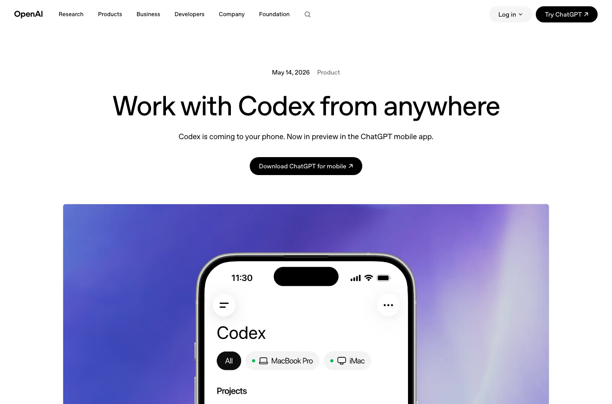
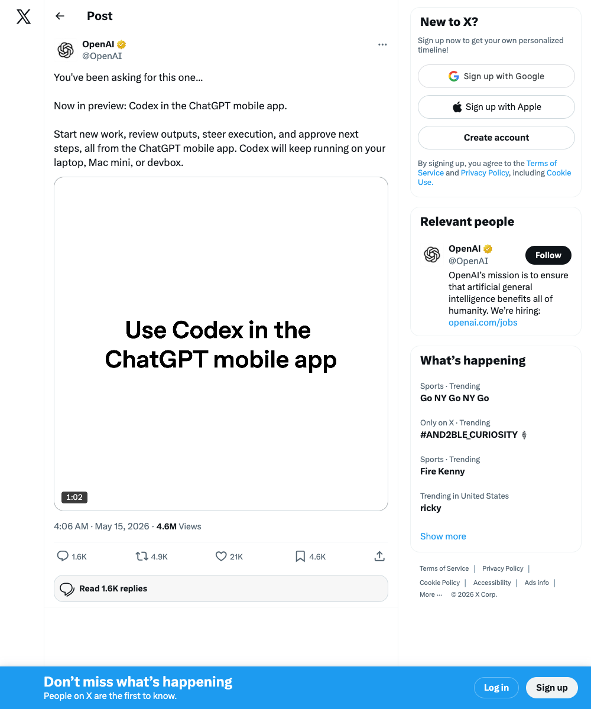
SETUP FLOW
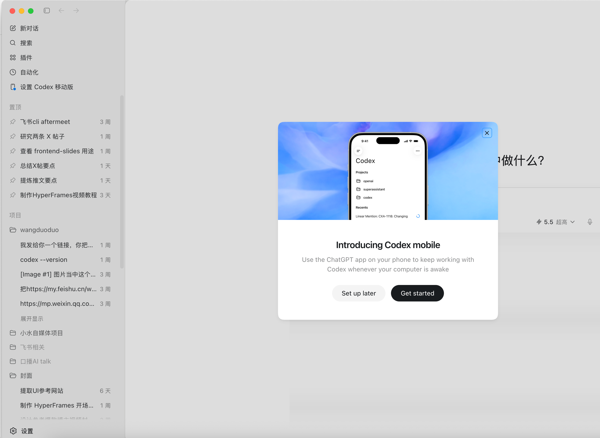
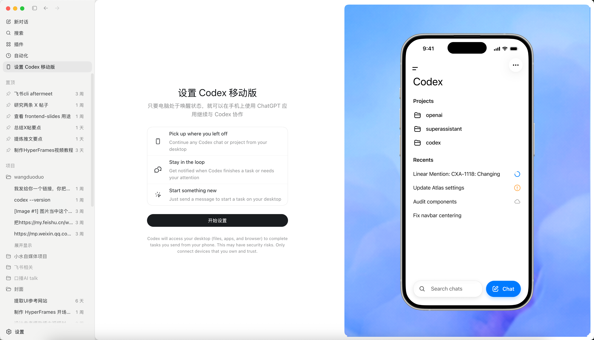
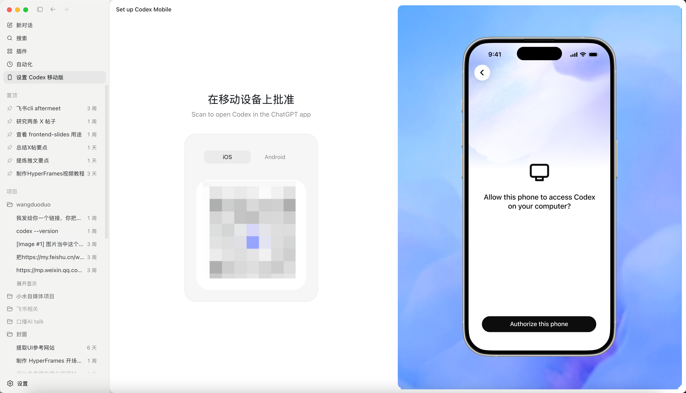
PHONE AS CONTROL DESK
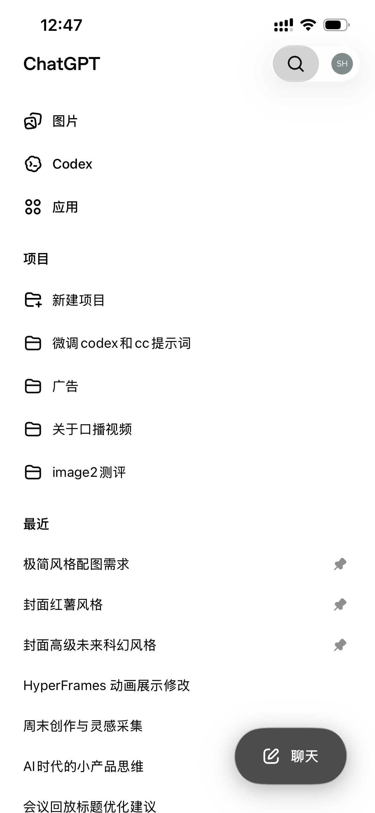
进入项目和线程
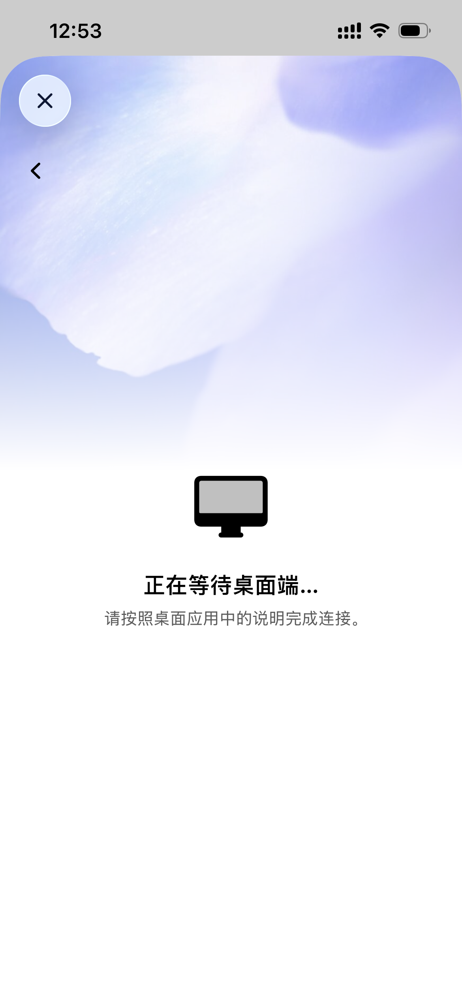
查看任务输出
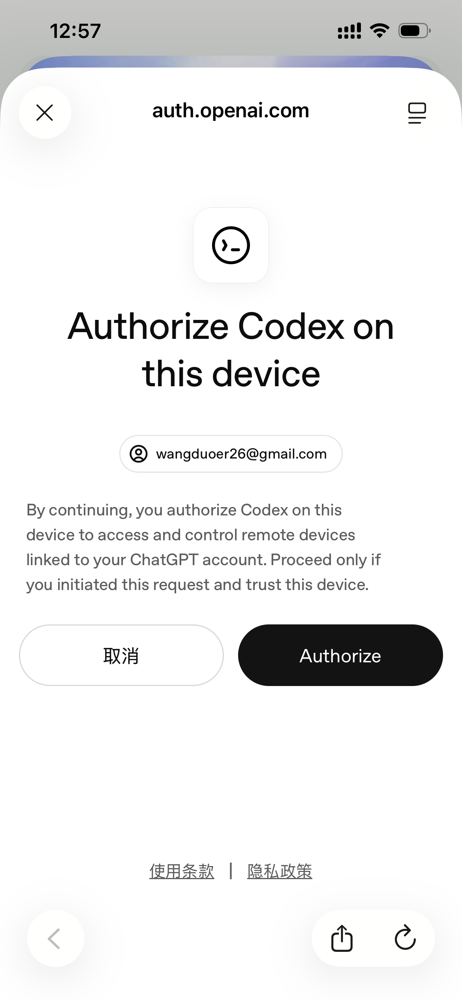
继续补指令
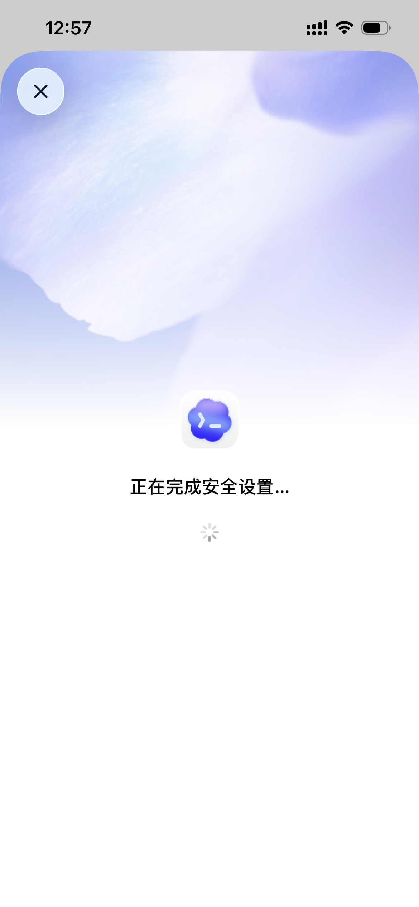
等待电脑执行
02 / CHROME EXTENSION
后台、邮箱、CRM、公众号后台这类任务，以前经常卡在登录态。Chrome 插件让 Codex 在授权后读取和操作网页。
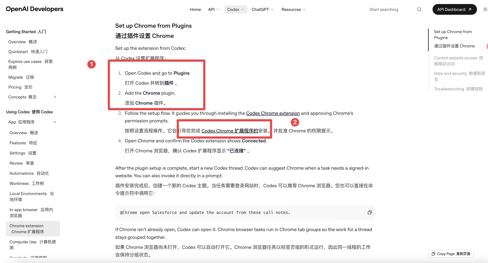
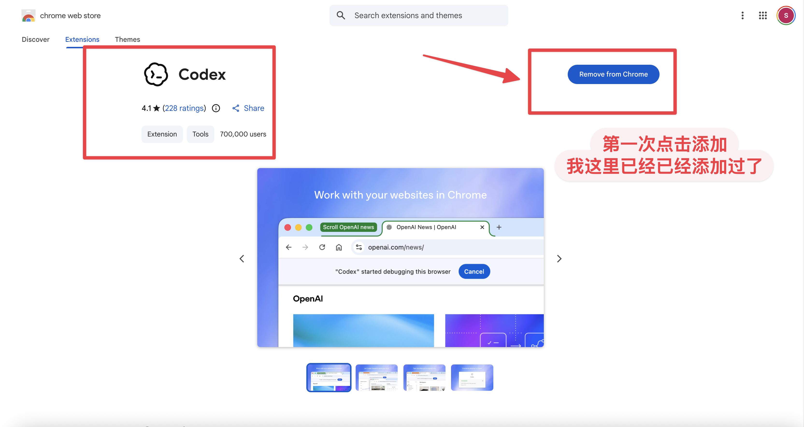
03 / APPSHOTS
Mac 上按两下 Command，把当前窗口截图和可读取文字发进 Codex 线程。UI 间距、报错页、设置页都更好解释。
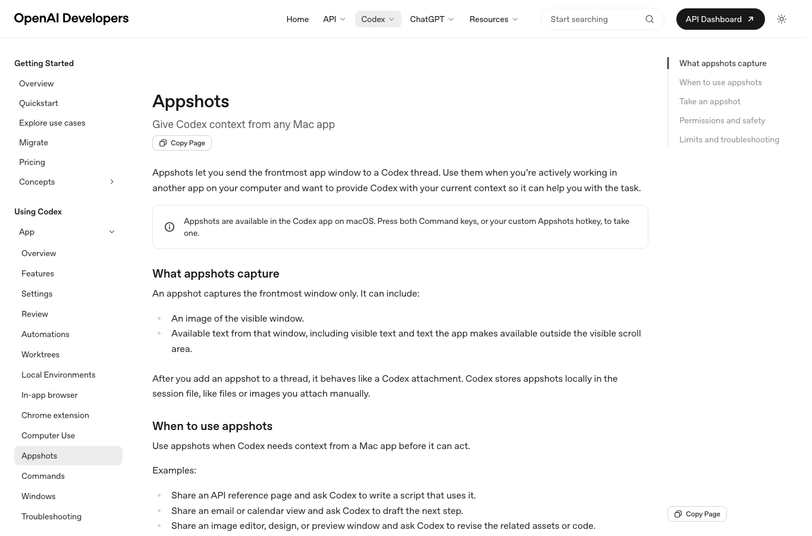
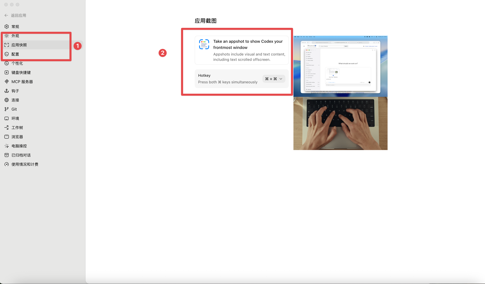
04 / BRANCH CONVERSATION
当一个问题有两种方案时，原线程不要纠结。开分支试另一条路线，最后对比风险。
05 / GOAL MODE
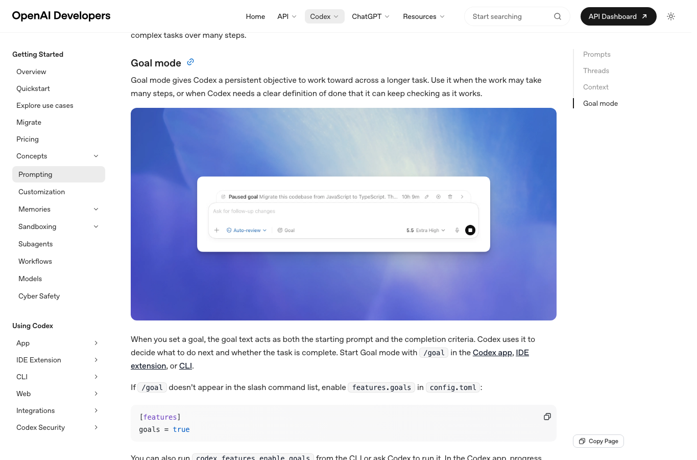
KEEP EXPLORING
想要文档，评论区留「Codex」